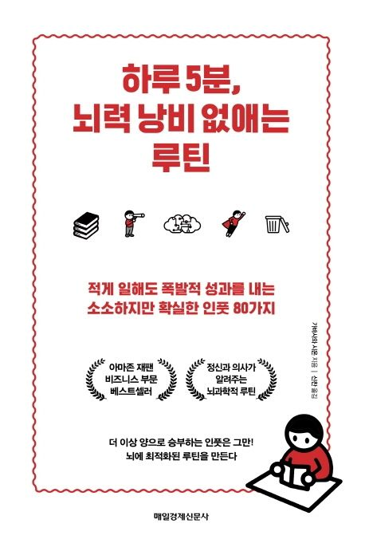

Reading Log
Books I've read and key takeaways. Personal reflections and points that resonated with me.

호의에 대하여
2026-03-20
기대했던 내용은 조금 더 있었지만, 한 판사님의 삶과 습관, 세상을 견디는 방식을 조용히 엿볼 수 있어서 좋았다.

실리콘밸리 프로세스의 힘
2026-03-13
카리스마는 시작을 만들 수 있지만, 반복 가능한 성과는 프로세스 설계와 오퍼레이터의 실행, 고객 중심 운영, 디테일 관리에서 나온다.

하루 5분, 뇌력 낭비 없애는 루틴
2026-03-08
아웃풋을 전제로 하지 않은 인풋은 정말 남는 게 적다. 삶을 더 잘 설계하려면 아웃풋을 전제로 움직여야 한다.